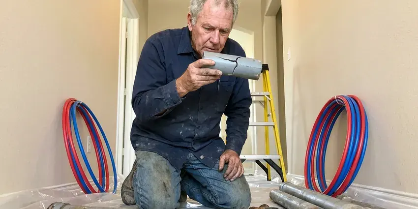

Sump Pump Maintenance in St. George, UT
Most sump pumps last seven to ten years if someone checks on them. We clean the pit, test the float and clear the discharge in St. George, UT.
- Prompt Service Calls
- Pre-Storm Checkups
- Amp Draw Readings
- Real Water Float Testing

Keep the Basement Dry With Sump Pump Maintenance in St. George, UT
We check the pump, float, valve and battery backup on every visit.
Sump Pump Maintenance That Prepares Your Home for Storms in St. George, UT
BPK Plumbing maintains submersible and pedestal sump pumps in basements, crawlspaces, window wells and garage drain pits, along with the battery backups that sit beside them. We clean the basin first. Next comes a water test on the float and a walk along the discharge line to see where it lets out.
Work we handle every week:
- Pit and intake screen cleaning
- Discharge line flow and joint checks
- Check valve, weep hole and freeze guard inspection

Additional Plumbing Maintenance Services in St. George, UT
Our maintenance and specialty plumbing services in St. George, UT protect your home year-round and extend the life of every system.


Customers
Why Choose BPK Plumbing for Sump Pump Maintenance in St. George, UT?
A sump pump that has not run in four months is an unknown. We put it through a full cycle with water, measure the amp draw and replace whatever is worn before you are counting on it.
- Prevent Flooding, The pump is the only thing between a rising water table and your basement floor, so it has to start the first time.
- Mold Prevention, A dry basement keeps mold and mildew from taking hold behind drywall or under carpet.
- Foundation Protection, Moving groundwater out of the pit relieves pressure on the foundation walls and keeps saturated soil from shifting the footings.
Citywide Coverage
We cover all of St. George and the towns around it, from older neighborhoods with fieldstone basements to new subdivisions with poured walls and sealed pit lids. Same-day visits are often possible.
Experienced Team
The BPK Plumbing crew has seen most of the sump problems Utah homes run into, from silted pits to undersized discharge lines. Repairs go after the cause, not just the symptom.
Safety-First Approach
Most local codes do not allow sump water to drain into the sanitary sewer, so we check where yours ties in. The pit lid gets checked too, so kids and pets stay out.
Trusted Certified St. George Plumbing Services Professionals
At BPK Plumbing, we take pride in licensed, certified plumbing services throughout St. George, UT. Those papers on the wall mean something. Every repair, install and maintenance visit follows strict safety and quality rules, and the plumbers doing the work carry recognized industry credentials.
Call Us Now PHCC Plumbing Contractor Recognition
PHCC Plumbing Contractor Recognition Better Business Bureau (BBB) Accreditation
Better Business Bureau (BBB) Accreditation Angi Certified Pro
Angi Certified Pro ISO 9001 Quality Management Certification
ISO 9001 Quality Management CertificationSump Pump Maintenance in St. George, UT: Pits, Floats and Valves
Backup Pump Battery Service in St. George
Outages and heavy rain tend to arrive together. A backup pump keeps water moving when the main pump loses power or quits. We load test the battery, check the charger and the alarm, and run the backup by itself with the main pump unplugged. Expect a new battery every three to five years.

Battery Backup Sump Pump Maintenance in St. George, UT
Backup pumps sit in the pit next to the main pump and run off a 12-volt battery when the power drops or the primary fails. Our plumber load tests the battery instead of just reading its voltage. Then we unplug the main pump and let the backup empty the pit on its own. Alarms get tested too.
Crawlspace and Window Well Pumps in St. George, UT
Not every sump sits in a basement. Crawlspaces and deep window wells often have small pumps that clear runoff after a storm. Our plumber clears the screen, tests the float and traces the discharge to daylight or an approved drain, since a line that ends under the house only relocates the water. Frost-free hose bibs and well insulated pipes are common practice in Utah, especially in mountain areas with deep, long cold.
Pedestal Sump Pump Check-Ups in St. George, UT
Pedestal pumps keep the motor up on a column above the water, so the wear shows up in the shaft, the bearings and the float rod. We check the rod for bends and the stops for slipping. Bearings get a listen. Rattling or a high whine at startup usually means the motor is near the end.
Wayne Sump Pump Maintenance in St. George, UT
Some Wayne models draw water through a top suction intake, which helps them avoid pulling in the sludge that settles at the bottom of a pit. We check that intake and the float mechanism for buildup. Loose discharge fittings show up on every brand. Easy fix.
Commercial Building Sump Pumps in St. George, UT
Parking garages, mechanical rooms and loading docks often drain to large pits with pumps rated at a horsepower or more. They need checking more often than anything in a house. Our crew tests the controls, the alarm panel and each pump in a duplex station, and records amp draw every visit so a slow decline gets caught. Downtime costs money.
Home Sump Pump Maintenance in St. George
A typical house pit is about 18 inches across and two feet deep, and most of what goes wrong happens inside it. Our plumber lifts the pump out, cleans the screen and empties the sediment from the bottom. After that, the pump gets a real water test. Rocky ground can make sewer line and water service repairs more involved, and trenchless methods are often a good fit where digging is tough.

Elevator Pit and Garage Pumps in St. George
Elevator pits, parking garages and mechanical rooms all collect water that has nowhere to go by gravity, so a pump has to lift it out. In elevator pits, the pump usually needs an oil-sensing control so it will not discharge hydraulic fluid. Duplex systems and high-water alarms get tested on a fixed schedule. The property manager gets a copy of every log.
Sump Pump Maintenance Near Me in St. George, UT
Low spots on a block flood first, and our crews know which St. George streets see standing water after a hard storm. That tells us where discharge lines need extra length. Pumps in low lots cycle far more often.
Water pools in predictable places around a house: the downspout corners, the low side of the yard and wherever the grade slopes back toward the wall. We look at all of that while we are outside checking the discharge. A little regrading can cut the pump's workload.
BPK Plumbing at a Glance
- Fully licensed plumbing team covering St. George, UT
- Same-day appointments and 24/7 emergency response
- Upfront, flat-rate pricing before work begins
- 4.8-star rated by 470+ Utah customers
St. George Map
St. George Information
- Population
- 104,578
- Area codes
- 435/385/702
- Service area
- St. George and towns within a 40 mile drive
- Nearby
- Eagle Mountain, Provo, Saratoga Springs, Orem
Drought years are common in Utah, so many homeowners upgrade to efficient irrigation and fixtures to cut water use. Below-grade rooms in St. George, UT stay dry only as long as the pump starts.
Talk to a Plumber
Reach out to BPK Plumbing for honest, reliable plumbing from people who know the trade in St. George, UT.
Our Specialized Plumbing Services in St. George, UT
At BPK Plumbing, we handle the full list of plumbing services across St. George, UT. From leak detection to full system installs, our team works fast and charges fair prices on homes and commercial properties alike. Explore our core services below:


What Happens During Sump Pump Maintenance in St. George, UT
Our plumber starts at the outlet, moves to the pump and finishes at the discharge line, in that order.
Request a Quote
Call (385) 543-4073 or use the online form, and let us know the pit location and if there is a backup pump. We give you a written price and a time that works.
On-Site Inspection
Your plumber arrives at your St. George home and starts with the outlet, cord and plug. Then we look over the pit, the pump and the float.
Thorough Cleaning
We pull the pump, scoop out the basin and rinse the intake screen and impeller. With the screen clear, clogs are far less likely.
Frequently Asked Questions About Sump Pump Maintenance in St. George
Most St. George, UT homeowners pay $100 to $250 for a standard maintenance visit, depending on the pump type and how long since it was last serviced. The price includes the inspection, a pit cleanout and the water test. Any parts or repairs get a separate quote up front.
Routine maintenance in St. George, UT usually does not need a permit. A full replacement, a new discharge route or new wiring may need one, depending on what the local building department requires. You will know before we begin if a permit applies.
Most maintenance and simple part swaps need no permit. Swapping the whole pump, adding wiring or rerouting the discharge can trigger a permit locally. We handle the paperwork when one is needed.
Once a year for most homes. Book it a few weeks ahead of your wettest season, while there is still time to swap a worn pump. Pumps that run every week do better with two visits a year.
Utah water is among the most mineral-heavy in the country in many areas, and scale builds up quickly in water heaters, faucets and appliances. In hard-water areas, scale builds up on the impeller, the float rod and the basin walls. Given a few years, the buildup slows the pump and can stick a vertical float so the pump never kicks on. Cleaning it off is part of every visit.
You can check that the pump is plugged in and the discharge outlet outside is not buried or blocked. Pouring a bucket of water into the pit shows whether the pump kicks on. What a homeowner check misses is amp draw, check valve wear and early float problems, which take a meter and pulling the pump to see.
Without a working battery or water-powered backup, the pit keeps filling during an outage and eventually spills over onto the basement floor. In a hard storm, that takes under an hour. A water-powered unit runs on municipal pressure and is not an option for homes on a well.
Seven to ten years is normal for a quality pump. Pumps that sit dry for long stretches can seize sooner, which is why we test them in dry months too.
What Our Customers Say About Our Plumbing Experts

Daniel K.
A pipe burst in the garage ceiling at 11 at night. Someone answered on the second ring, and the plumber was in my driveway about fifty minutes later. He shut off the main, cut out the split section, and had water back on before 2 am.
Emergency Plumbing · Eagle Mountain, UTTyler J.
We bought a taller comfort height toilet for my dad, who just had knee surgery. The plumber pulled the old one, found the flange was cracked, and replaced it before setting the new bowl. Took about two hours.
Toilet Installation · St. George, UT
Laura S.
Our 40 gallon tank started leaking from the bottom after thirteen years. The tech hauled the old one out, set a new unit with a fresh expansion tank, and had hot water running in about four hours. He took the old tank with him too.
Water Heater Replacement · Herriman, UT
Karen W.
After our third pinhole leak in copper, we stopped patching. BPK Plumbing gave us a written plan room by room and repiped the house in PEX while we stayed in it. The crew covered our floors every morning and cleaned up every night.
Repiping · Saratoga Springs, UT
Lisa C.
Water was pouring out from under the washing machine on a holiday weekend. BPK Plumbing talked me through closing the valves over the phone and had a plumber at the house within ninety minutes. It was a burst fill hose.
Emergency Plumbing · Saratoga Springs, UT
Brian W.
I smelled gas behind the dryer and called right away. The plumber found a corroded flex connector, replaced it, and pressure tested the whole line before turning the gas back on. He let me watch the gauge hold steady for fifteen minutes.
Gas Line Repair · Herriman, UT